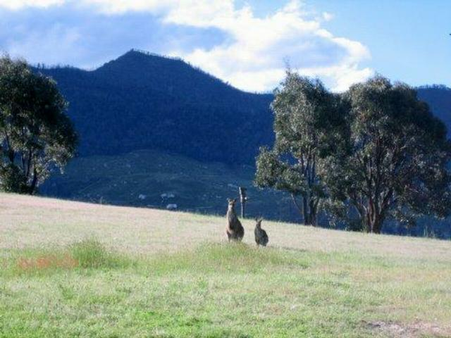
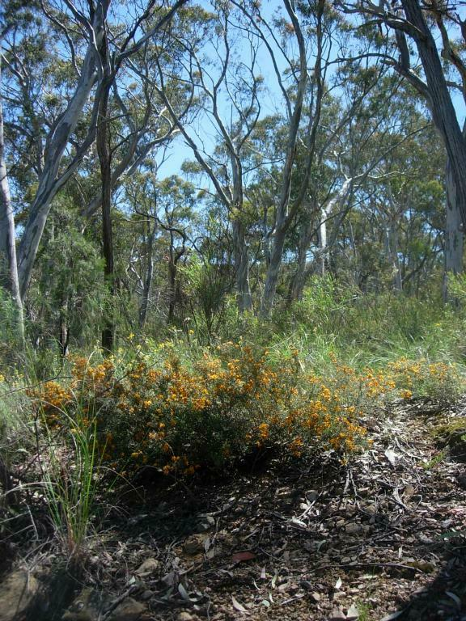
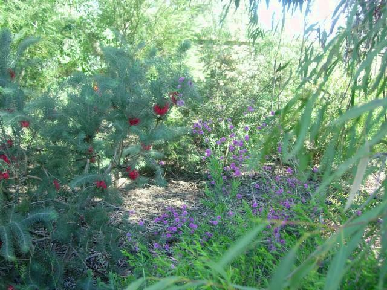
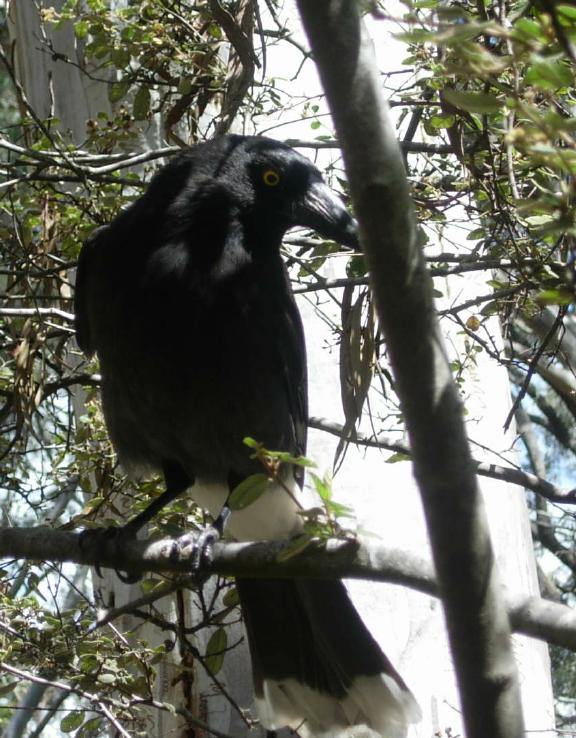
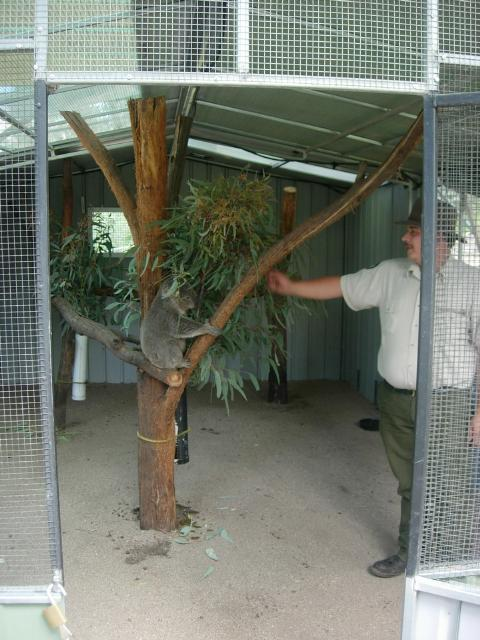
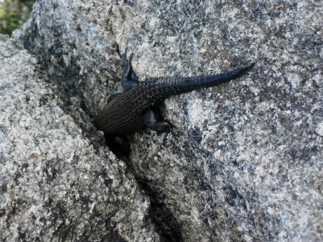
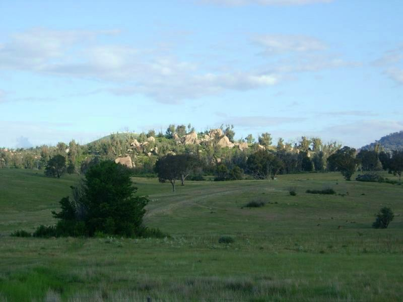
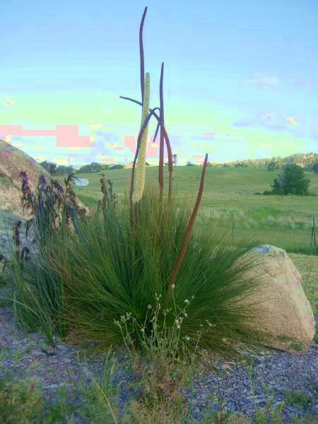

-=Critters and Plants=-

Here's as good a roo pic as I've been able to finangle--actually Robin Gillette took it. Oz is full of creatures that defy photography. I've seen a platypus (bill, anyway), wallabees, roos, and many varieties of huge brilliant birds. None of whom were willing to pose.

Flowers at the Botanical Gardens
What do you call a tech write in Oz? Docoboy!
Seriously. That's what everyone calls 'em. I'm not making this up.

More flowers at the Botanical Gardens

Kenderbird
This magpie had a nest high above my bench at the Botanical Gardens. I watched him ferrying in mouthfuls. Instead of swooping, he flew down to just beyond arm's reach and eyed my camera. So I took his picture.

Feeding time for a koala at the Tidbinballa nature reserve. He's in captivity because he's blind in one eye. There are other koalas there, but they're impossible to spot up in trees.
When he sees food coming, the koala makes a deep rumbling "Groooooink" that sounds like a 20 foot bullfrog. How does little critter make that sound?

The Ostrich Strategy. The lizard relaxed once I was "gone".

Rocks at Tidbinballa. Reminds me of Riverside/Joshua Tree somewhat.

Xerorrhea--a rare primitive plant.